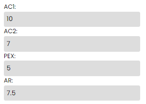

Inserindo Notas: Preencha os campos para AC1, AC2, PEX e AR com suas notas de 0 a 10.
Exemplo:
Calculando a Média: Clique em "Calcular". O resultado aparecerá em uma janela modal.
Resultado:
Aprovado: Média maior ou igual a 7.
Exame: Média entre 3 e 6.9
Reprovado: Média menor 3
Limpar Campos: Clique em "Limpar" para resetar os campos.
Pesos das Notas: AC1 (10%), AC2 (20%), PEX (20%), AR (50%).
Mensagens de Erro: Certifique-se de preencher todos os campos corretamente.